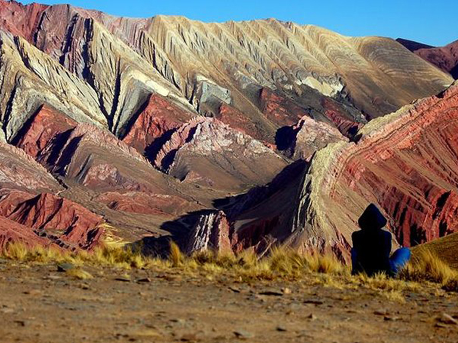

Tilcara
Tilcara es un pueblo muy animado con la visita de los turistas. En sus calles se
levantan hoteles, restaurantes, peñas folclóricas, cafés, tiendas de artesanías y agencias de viajes.
El pueblo de Tilcara tiene su centro en la plaza principal Manuel álvarez Prado donde funciona la feria
artesanal. Muy cerca se encuentra la Iglesia Nuestra Señora del Rosario y los museos entre los que se
destacan el Museo Arqueológico “Eduardo Casanova”, el Museo de Pinturas "José Antonio Terry" y el Museo de
Bellas Artes “Hugo Irureta”.
El pueblo es muy agradable para recorrerlo caminando y visitar los museos y la feria artesanal.
Las noches tilcareñas proponen disfrutar de peñas con música folclórica en vivo.
Purmamarca

El pueblo de Purmamarca junto con el Cerro Siete Colores forma una de las postales
más famosas del país.
Si bien Purmamarca es considerado un pueblo de paso, cada día son más los turistas que eligen hacer noche en
el pueblo y conocer sus alrededores.
El pueblo de Purmamarca conserva la arquitectura colonial y las costumbres y tradiciones de los pueblos
quebradeños. Es el destino de muchas personas que buscan descansar en un pueblo tranquilo y conocer los
atractivos turísticos de la zona.
Humahuaca

Humahuaca cuenta con diferentes atractivos turísticos, hoteles y hostales, restaurantes y peñas y el mercado artesanal.
El pueblo de Humahuaca se encuentra cerca de los 3.000 metros de altura, rodeado de cordones montañosos de gran belleza. El pueblo es la entrada a La Puna jujeña y es la última localidad importante de la Quebrada de Humahuaca, en el camino hacia el norte (La Quiaca).
El pueblo al igual que la quebrada toma el nombre de los antiguos pobladores de la zona que fueron los omaguacas.
Humahuaca cuenta con diferentes servicios turísticos para los visitantes como hoteles y hostales, restaurantes y peñas folclóricas, estación de servicio, campings, museos y feria artesanal, agencias de viajes y hospital.
Salinas Grandes

Las Salinas Grandes son las terceras más grandes del mundo después del Salar de Uyuni en Bolivia y el Salar de Arizaro en Salta.
Estas salinas brindan un espectáculo visual único en temporadas de lluvias ya que se cubren por 30 cm. de agua produciendo un panorama de color turquesa con vista al nevado de Chañi a sus espaldas y la ruta que atraviesa por medio de ellas. Están situadas entre los límites de las provincias norteñas de Jujuy y Salta, son una de las salinas de mayor extensión dentro del país. Desde esta inmensa planicie de sal, que presenta un bello y característico paisaje de la puna jujeña, se extrae la misma de forma tradicional.
Quebrada de las señoritas
Son unas fantásticas formaciones rocosas de color rojo que se encuentran a 9 km de Humahuaca, en el pueblo de Uquía. Conformadas por cavernas y grietas tectónicas, este destino es un gran plan para quienes visiten Jujuy. En este post te contamos qué ver en Quebrada de las Señoritas para que tengas en cuenta cuando organices tu próximo viaje.
Esta Quebrada, constituye apenas una porción del área circundante a Uquía. Posee una antigüedad que varía entre el millón y los tres millones de años. Gracias a su importante historia geológica, nos da la posibilidad de visitar cavernas y grietas tectónicas.
Parque nacional Calilegua

El Parque Nacional Calilegua fue creado en el año 1979 gracias a una donación de la empresa Ledesma de 76.300 hectáreas para conservar un sector representativo de las yungas o selvas de montaña. Las Yungas es uno de los ambientes ecológicos de mayor diversidad en el país junto con la selva misionera. Calilegua es el refugio de mas de 300 especies de aves y numerosos animales en peligro de extinción como la taruca o huemul del norte, yaguareté, anta o tapir y oso hormiguero.Cuenta con 9 atractivos miradores, senderos y una bici senda. Se destaca el sendero Intercultural Guaraní que puede ser visitado con un guía originario que narrando en guaraní y español cuenta historias del pueblo Ava Guaraní.